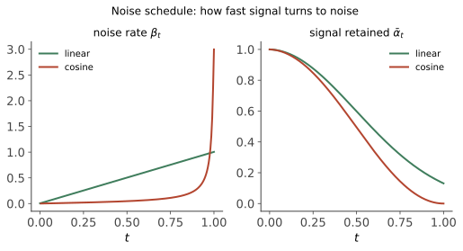
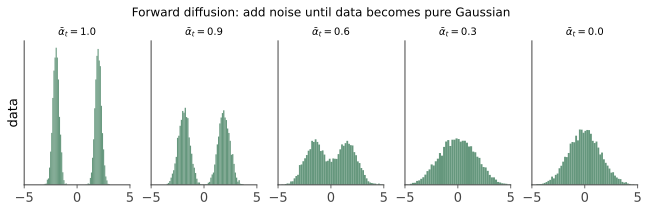

本讲目录
第 02 讲 · 扩散模型 I：DDPM 全推导
本讲是全课程数学的心脏，值得铺开纸笔完整跟一遍。我们把"加噪-去噪"写成严格的概率模型（DDPM，Ho et al. 2020），从极大似然出发推导出训练目标，最后你会看到一条壮观的化简链：变分下界 → 一串 KL 散度 → 高斯均值匹配 → 一个平方损失："猜噪声"。读完这讲，KSampler 每一步在算什么，对你不再有任何神秘感。
0. 记号约定

\(x_0\)：真实图像（先不管潜空间，第 04 讲再引入）；\(x_1, \dots, x_T\)：逐步加噪的中间态（\(T\) 通常取 1000）；\(\beta_t \in (0,1)\)：第 \(t\) 步的加噪强度（噪声日程表，预先固定的小数，从 \(10^{-4}\) 缓增到 \(0.02\)）。记：
\(\bar\alpha_t\) 单调递减：\(\bar\alpha_0 = 1\)（纯净），\(\bar\alpha_T \approx 0\)（纯噪声）。它是"信号残存比例"的刻度尺。
1. 前向过程：固定的、不用学的一半

每一步在缩小信号的同时注入高斯噪声：
系数为什么是 \(\sqrt{\alpha_t}\) 和 \(\sqrt{\beta_t}\)？这是方差守恒设计：若 \(\mathrm{Var}(x_{t-1}) = I\)，则 \(\mathrm{Var}(x_t) = \alpha_t I + \beta_t I = I\)——信号与噪声的总能量恒为 1，不会爆炸也不会消失，只是配比逐步从"全信号"滑向"全噪声"。
闭式跳跃（关键性质）：反复代入一次就能从 \(x_0\) 直达任意 \(x_t\)。做两步看清结构：
独立高斯之和仍是高斯、方差相加：\(\alpha_t\beta_{t-1} + \beta_t = \alpha_t(1 - \alpha_{t-1}) + 1 - \alpha_t = 1 - \alpha_t\alpha_{t-1}\)。归纳到底：
训练时不用逐步模拟加噪——任取一个 \(t\)，一步就能造出训练样本 \(x_t\)。这个小公式是整个训练效率的基石，也请记住它的两个系数，后面反复出现。
2. 反向过程：要学的一半
生成 = 从 \(x_T \sim \mathcal{N}(0, I)\) 出发，逐步执行 \(q(x_{t-1} \mid x_t)\)——但这个"真实的反向核"依赖整个数据分布，我们不知道。用神经网络近似它：
为什么敢用高斯参数化？这一步藏着扩散模型"把大问题拆成小问题"的全部智慧：当步长 \(\beta_t\) 足够小时，可以证明真实反向核趋近高斯（连续时间极限下是严格结论）。一步跨越"噪声→图像"的分布无比复杂，但一小步去噪的分布近似高斯——难度被 \(T\) 步摊薄了。方差 \(\sigma_t^2\) 通常取定值（\(\beta_t\) 或下文的 \(\tilde\beta_t\)），网络只需学均值 \(\mu_\theta\)。
3. 训练目标：ELBO 完整推导
3.1 变分下界
想最大化 \(\log p_\theta(x_0)\)，但它要对所有加噪路径积分，算不了。标准武器是变分下界（与 VAE 同源；用 Jensen 不等式一行得到）：
其中 \(p_\theta(x_{0:T}) = p(x_T)\prod_{t=1}^T p_\theta(x_{t-1} \mid x_t)\)，\(q(x_{1:T} \mid x_0) = \prod_{t=1}^T q(x_t \mid x_{t-1})\)。
3.2 拆成逐步的 KL
把连乘展开、配对整理（中间用一次贝叶斯改写 \(q(x_t \mid x_{t-1}) = \frac{q(x_{t-1} \mid x_t, x_0)\, q(x_t \mid x_0)}{q(x_{t-1} \mid x_0)}\)，望远镜求和消掉一串项——这步代数建议亲手做一遍，五行搞定），得到标准分解：
\(L_T\) 与 \(\theta\) 无关（\(\bar\alpha_T \approx 0\) 使 \(q(x_T \mid x_0) \approx \mathcal{N}(0,I) = p(x_T)\)）。主体是中间那串 KL：让网络的每一步去噪 \(p_\theta(x_{t-1} \mid x_t)\)，对齐"知道谜底 \(x_0\) 时的理想去噪" \(q(x_{t-1} \mid x_t, x_0)\)。关键在于后者有闭式解。
3.3 闭式后验：知道谜底时该怎么去噪
用贝叶斯公式（三个因子都是已知高斯）：
对 \(x_{t-1}\) 把指数里的二次型配方（高斯×高斯必得高斯；耐心展开一次，约五行），得：
读它：理想的去噪均值是 \(x_0\) 与 \(x_t\) 的凸组合——往"谜底"方向拉一点，拉多少由噪声日程决定。
3.4 化简为"猜噪声"
两个同方差高斯的 KL 只剩均值差：\(D_{\mathrm{KL}} = \frac{1}{2\sigma_t^2}\|\tilde\mu_t - \mu_\theta\|^2\)。于是训练就是均值回归。现在做那步著名的换元：由闭式跳跃公式反解 \(x_0 = \frac{1}{\sqrt{\bar\alpha_t}}\big(x_t - \sqrt{1-\bar\alpha_t}\,\epsilon\big)\)，代入 \(\tilde\mu_t\) 并整理（代数三行，用 \(\bar\alpha_t = \alpha_t \bar\alpha_{t-1}\) 通分）：
理想均值 = 当前噪图的确定性变换，唯一未知量是"当初加进去的那份噪声 \(\epsilon\)"。那就让网络照同样的公式办，只是把 \(\epsilon\) 换成网络的猜测 \(\epsilon_\theta(x_t, t)\)：
代回 KL，公共项全部相消：
Ho et al. 发现把前面那坨权重直接扔掉（各 \(t\) 一视同仁）训练反而更好，得到最终的简化目标：
化简链走完：极大似然 → ELBO → 逐步 KL → 高斯均值匹配 → 猜噪声的平方损失。训练循环朴素得不像话：抽一张图、抽一个 \(t\)、抽一份噪声、一步造出 \(x_t\)、让网络猜噪声、回传梯度。没有对抗、没有博弈，就是回归——这就是第 01 讲表格里"训练稳定 ✓"的来源。
3.5 兑现第 01 讲的承诺：猜噪声 = 学 score
对 \(q(x_t \mid x_0) = \mathcal{N}(\sqrt{\bar\alpha_t} x_0, (1-\bar\alpha_t)I)\) 直接求对数梯度：
（第二个等号代入了 \(x_t\) 的闭式。）对 \(x_0\) 取期望后同样的关系连接着边际分布的 score（Tweedie 公式），于是：
噪声预测器就是（缩放了的）score 场——第 01 讲"墨水倒放需要知道每个分子往哪挪"的那个方向场，网络已经在训练中学到了。同一个模型，两种等价视角（DDPM 与 score-based SDE 在 2021 年被证明统一），第 03 讲的采样器理论就建立在这个统一上。
4. 采样：DDPM 原版算法
训练好 \(\epsilon_\theta\) 后，从 \(x_T \sim \mathcal{N}(0,I)\) 出发迭代：
注意每步还要加回一点随机噪声（除了最后一步）——这是从分布 \(p_\theta(x_{t-1}\mid x_t)\) 采样而非只取均值；一路只取均值会跌出分布、图变糊。这类"带随机注入"的采样正是 ComfyUI 里 ancestral 采样器（euler_ancestral 等带 a 后缀的）的血统来源，第 03 讲展开。
原版的问题也一目了然：\(T = 1000\) 步，每步过一次大网络——生成一张图要一千次前向。第 03 讲的全部使命就是把 1000 步压到 20 步。
5. 对上你的 ComfyUI
本讲的数学已经能解释画布上的好几样东西：
| ComfyUI | 本讲对应 |
|---|---|
KSampler 的 steps |
反向迭代次数（不是 1000，因为用了第 03 讲的加速采样器） |
KSampler 的 denoise=1.0 |
从 \(t = T\)（纯噪声）走完全程 = 文生图 |
denoise=0.3（图生图） |
对输入图执行闭式跳跃加噪到 \(t \approx 0.3T\)，再从那里往回去噪——原图结构保留多少，取决于你把它推回噪声多深。这就是 denoise 参数的全部秘密 |
add_noise / 种子 |
\(x_T\) 和每步 \(z\) 的随机源；种子固定则全程可复现 |
| 模型文件里最大的那块 | \(\epsilon_\theta\) 的权重（U-Net 或 DiT，第 04 讲拆开看） |
本讲小结
| 概念 | 一句话 |
|---|---|
| 前向过程 | \(x_t = \sqrt{\bar\alpha_t}x_0 + \sqrt{1-\bar\alpha_t}\epsilon\)：一步可达、方差守恒 |
| 反向参数化 | 小步长下反向核近似高斯，只学均值 |
| ELBO 分解 | 逐步 KL：网络去噪对齐"知道谜底的理想去噪" |
| 闭式后验 | \(\tilde\mu_t\) 是 \(x_0\) 与 \(x_t\) 的凸组合 |
| \(L_{\text{simple}}\) | 换元后一切化简为 \(\|\epsilon - \epsilon_\theta\|^2\)：猜噪声 |
| score 等价 | \(\epsilon_\theta \propto -\nabla\log p\)：学到的是指向流形的方向场 |
| denoise 参数 | 图生图 = 加噪到中途再折返 |
下一讲解决扩散模型唯一的短板：慢。DDIM 如何证明"同一个训练目标支持跳步采样"、微分方程视角如何把采样变成数值积分问题——然后 ComfyUI 采样器下拉框里那二十几个名字，会在十分钟内全部各就各位。